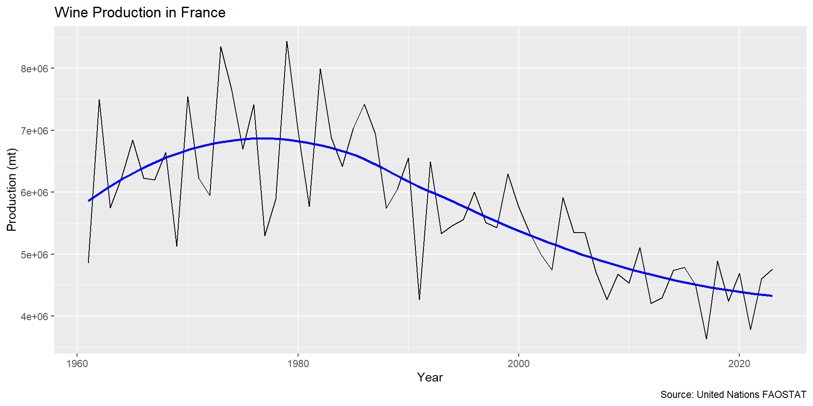
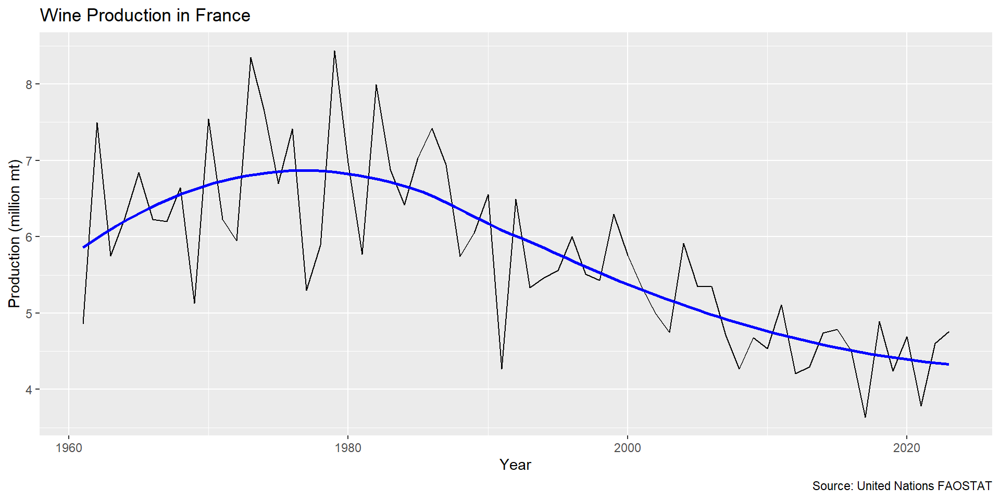
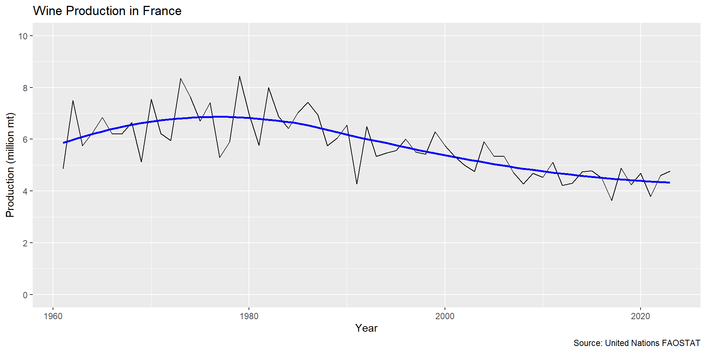
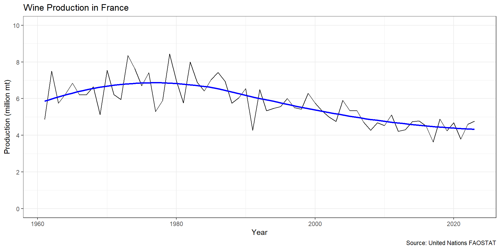
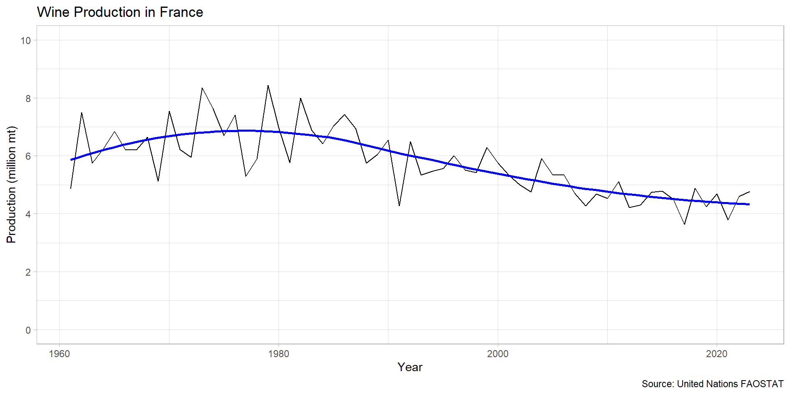
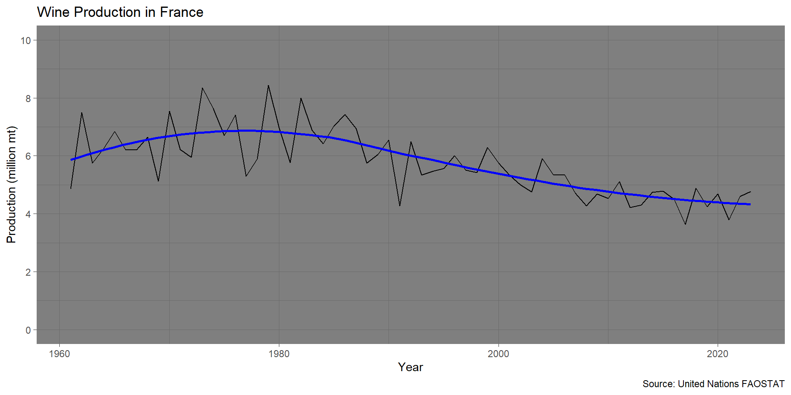
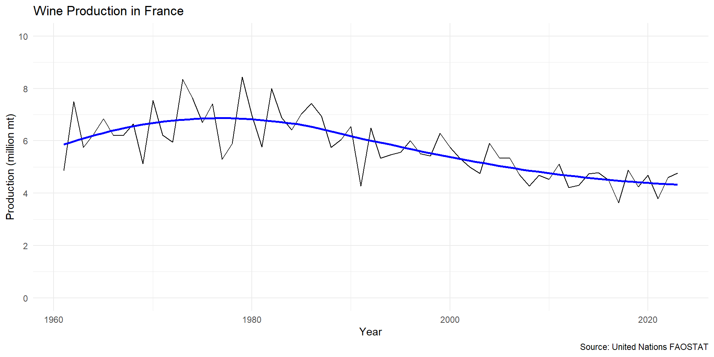

Data Visualization and Parquet Files
AREC 280 - Harvesting Big Data
University of Maryland
The Parquet data file format
Additional Data Visualization using ggplot()
ggplot()We will continue to use the FAO data in
AGNR-AREC280_Fall2026/Data/FAO
The Bottleneck:
The Next Generation:
Define a data file format for modern big data
Parquet (PAR-kay) is a modern data file format for storing tidy data frames
Column-oriented storage
Automatic Compression
Strict Schema
NA) valuesIn this class I will provide Parquet versions of most data files
You can load parquet files in R
read_parquet()arrow libraryLoad FAO/parquet/FAO_crop_livestock.parquet into R.
New Package
You will need to install the arrow package if you haven’t already
This is the full FAO data file
Let’s start by focusing on a single measurement of one crop in one country
Create a pipeline to construct a single crop data frame
Step 1
distinct() to look at countries (Area)filter() command that would limit the data to that countryDisplaying long results
R limits results in the console to 10 - 20 lines.
Pipe your result to print(n=Inf) to display all rows
I chose to look at France
# A tibble: 26,877 × 15
ISO3166_1 Area ItemCode Item `Area Code` `Item Code` `Element Code` Element
<chr> <chr> <chr> <chr> <int> <int> <int> <chr>
1 250 Fran… 01371 Almo… 68 221 5312 Area h…
2 250 Fran… 01371 Almo… 68 221 5312 Area h…
3 250 Fran… 01371 Almo… 68 221 5312 Area h…
4 250 Fran… 01371 Almo… 68 221 5312 Area h…
5 250 Fran… 01371 Almo… 68 221 5312 Area h…
6 250 Fran… 01371 Almo… 68 221 5312 Area h…
7 250 Fran… 01371 Almo… 68 221 5312 Area h…
8 250 Fran… 01371 Almo… 68 221 5312 Area h…
9 250 Fran… 01371 Almo… 68 221 5312 Area h…
10 250 Fran… 01371 Almo… 68 221 5312 Area h…
# ℹ 26,867 more rows
# ℹ 7 more variables: `Year Code` <int>, Year <int>, Unit <chr>, Value <dbl>,
# Flag <chr>, Note <chr>, ISO3 <chr>Create a pipeline to construct a single crop dataset
Step 2
distinct() to look at commodities (Item)filter() command that would limit the data to that commodityI chose to look at Wine in France
# A tibble: 63 × 15
ISO3166_1 Area ItemCode Item `Area Code` `Item Code` `Element Code` Element
<chr> <chr> <chr> <chr> <int> <int> <int> <chr>
1 250 Fran… 24212.02 Wine 68 564 5510 Produc…
2 250 Fran… 24212.02 Wine 68 564 5510 Produc…
3 250 Fran… 24212.02 Wine 68 564 5510 Produc…
4 250 Fran… 24212.02 Wine 68 564 5510 Produc…
5 250 Fran… 24212.02 Wine 68 564 5510 Produc…
6 250 Fran… 24212.02 Wine 68 564 5510 Produc…
7 250 Fran… 24212.02 Wine 68 564 5510 Produc…
8 250 Fran… 24212.02 Wine 68 564 5510 Produc…
9 250 Fran… 24212.02 Wine 68 564 5510 Produc…
10 250 Fran… 24212.02 Wine 68 564 5510 Produc…
# ℹ 53 more rows
# ℹ 7 more variables: `Year Code` <int>, Year <int>, Unit <chr>, Value <dbl>,
# Flag <chr>, Note <chr>, ISO3 <chr>Create a pipeline to construct a single crop dataset
Step 3
distinct() to look at measurements (Element)filter() command that would limit the data to that measurementI chose to look at Wine in France
# A tibble: 63 × 15
ISO3166_1 Area ItemCode Item `Area Code` `Item Code` `Element Code` Element
<chr> <chr> <chr> <chr> <int> <int> <int> <chr>
1 250 Fran… 24212.02 Wine 68 564 5510 Produc…
2 250 Fran… 24212.02 Wine 68 564 5510 Produc…
3 250 Fran… 24212.02 Wine 68 564 5510 Produc…
4 250 Fran… 24212.02 Wine 68 564 5510 Produc…
5 250 Fran… 24212.02 Wine 68 564 5510 Produc…
6 250 Fran… 24212.02 Wine 68 564 5510 Produc…
7 250 Fran… 24212.02 Wine 68 564 5510 Produc…
8 250 Fran… 24212.02 Wine 68 564 5510 Produc…
9 250 Fran… 24212.02 Wine 68 564 5510 Produc…
10 250 Fran… 24212.02 Wine 68 564 5510 Produc…
# ℹ 53 more rows
# ℹ 7 more variables: `Year Code` <int>, Year <int>, Unit <chr>, Value <dbl>,
# Flag <chr>, Note <chr>, ISO3 <chr>Create a pipeline to construct a single crop dataset
Step 4
Examine you filtered data frame to be sure you have information you expect
glimpse()summary()distinct() or count()Use your filtered data frame to create a visualization
geom_point)geom_smooth)Removing error band from geom_smooth
You can remove the error band from geom_smooth layers by setting the layer property se=FALSE

The cleanest choice is to rescale the vertical axis
Value by 1,000,000ggplot you can do this math “on-the-fly” in a visualizationmean()) will compute the value over all data in that layer
scale_<axis>_<type>()<axis> is x or y<type> is the axis type
Axis Scale Resources
The Help feature in RStudio has excellent documentation, start by typing “scale_” in the search box.
There is also an excellent resource for using scales at
The vertical axis in our visualization is continuous
scale_y_continuous()limitsbreaksminor_breaksArguments for scale_y_continuous()
limits
breaks
minor_breaks
I am going to
limits)breaks)minor_breaks)Creating Vectors
Create vectors with the c() function
You can create a sequence of numbers in a vector with the seq() function
Make changes you think are appropriate for your visualziation!
ggplot(
data=fao_filtered,
mapping=aes(x=Year,y=Value/1000000)
) +
geom_line(color="black") +
geom_smooth(color="blue",se=FALSE) +
labs(
title="Wine Production in France",
x="Year",
y="Production (million mt)",
caption="Source: United Nations FAOSTAT"
) +
scale_y_continuous(
limits=c(0,10),
breaks=seq(0,10,2),
minor_breaks=seq(0,10,1)
)
You can store a ggplot visualization using an assignment operator (e.g., ->)
print()This stores my visualization, but does not show it!
ggplot(
data=fao_filtered,
mapping=aes(x=Year,y=Value/1000000)
) +
geom_line(color="black") +
geom_smooth(color="blue",se=FALSE) +
labs(
title="Wine Production in France",
x="Year",
y="Production (million mt)",
caption="Source: United Nations FAOSTAT"
) +
scale_y_continuous(
limits=c(0,10),
breaks=seq(0,10,2),
minor_breaks=seq(0,10,1)
) -> production_vizggplot ThemesOverall appearance of a visualization is controlled by themes
theme_<name>()theme_grey()theme_bw()
theme_light()
theme_dark()
theme_minimal()
Visualizations are most useful if you can share them
ggsave()
ggsaveTo save a visualization use
ggsave(<output_path>)
.png, .jpg, .pdfplot: A variable containing the plot to save
width: Width of the saved image in inchesheight: Height of the saved image in inchesNo write permissions to the Data folder
You do not have permission to write files to the Data folder in the class Google drive. Attempting to save a file to that folder will result in a Permission Denied error.
Be sure to save to a folder on your local computer.
You have several choices for file formats, which have advantages and disadvantages
AREC 280 - Fall 2026